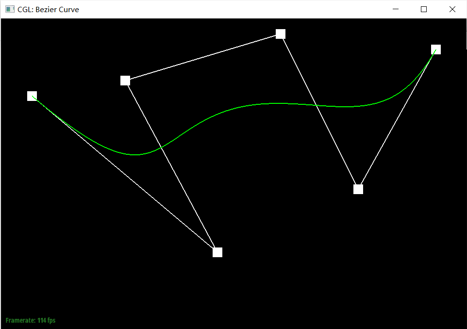
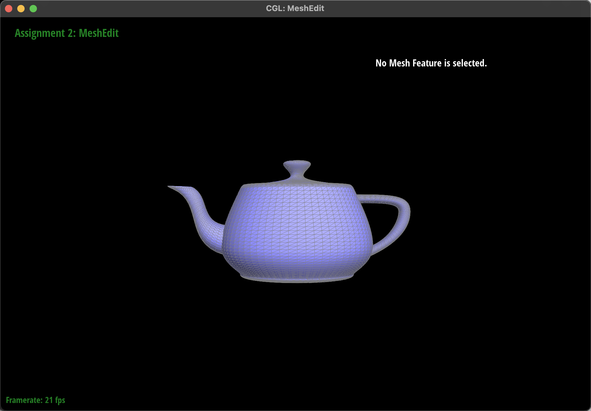

CS 184/284A: Computer Graphics and Imaging, Spring 2024
Homework 2：Meshedit
Author: Jian Yuüêü, Xiaoyu Zhuüê∑
CS 184/284A: Computer Graphics and Imaging, Spring 2024Homework 2：MesheditAuthor: Jian Yuüêü, Xiaoyu Zhuüê∑OverviewSection I: Bezier Curves and SurfacesPart 1: Bezier Curves with 1D de Casteljau SubdivisionPart 2: Bezier Surfaces with Separable 1D de CasteljauSection II: Triangle Meshes and Half-Edge Data StructurePart 3: Area-Weighted Vertex NormalsPart 4: Edge FlipPart 5: Edge SplitPart 6: Loop Subdivision for Mesh Upsampling
Overview
In this assignment, we delve into the intricacies of mesh editing, focusing on the implementation of Bezier curves and surfaces, triangle meshes, and half-edge data structures. Our work encompasses a range of tasks including the rendering of Bezier curves via 1D de Casteljau subdivision, manipulation of Bezier surfaces, and enhancements to mesh structure through operations such as vertex normalization, edge flipping, and edge splitting. Further, we explore mesh upsampling via Loop subdivision and tackle additional challenges such as handling boundary edges and implementing
Section I: Bezier Curves and Surfaces
Part 1: Bezier Curves with 1D de Casteljau Subdivision
Briefly explanation about de Casteljau's algorithm and our implemention
De Casteljau's algorithm is a recursive method for evaluating Bezier curves. The key idea behind de Casteljau's algorithm is to iteratively interpolate between the control points to calculate new points, gradually reducing the problem until a single point on the Bezier curve. By changing the parameter t from 0 to 1, this point will traverse the entire Bezier curve.
Our implemention: Our function evaluateStep takes a vector of 2D points as input and gives new control points on the next subdivion level as output using interpolation. More specificly, if there is only one point in vector control_points, directly return it; otherwise we traverse the input points in pairs and generate the new point by calculating (1 - t) * points[i] + t * points[i + 1]. Append each new point into vector2D new_points and return it.
Create a bzc file like below:
xxxxxxxxxx60.100 0.750 0.200 0.150 0.400 0.800 0.900 0.950 1.150 0.450 1.400 0.900Screeshot of each level:
Screenshot of slight different curve and differenrt parameter t. We choose 2 situations for representation, t close to 0 and close to 1.

Part 2: Bezier Surfaces with Separable 1D de Casteljau
Our implemention:
- There are three function for us, two helper function evaluateStep and evaluate1D and a main function evaluate.
- The
evaluateStepfunction is almost the same with what we implimented in part 1, the only difference is changing the data type from Vector2D to Vector3D. This function gives new control points on the next subdivion level. - The
evaluate1Dfunction performs the 1D de Casteljau algorithm to evaluate a Bezier curve at a specific parametert. The function enters a loop that calls evaluateStep function on the currentnewPointsand the parametert, untilnewPointsis reduced to a single point. - The
evaluatefunction is responsible for evaluating the Bezier surface at parametersuandv. It initializes an empty vector to store the final points calculated for each row of control points. Then it iterates over the rows of control points, applyingevaluate1Dfor the parameteru, effectively collapsing each row into a single point. Next, taking all these points of each row as new cotrol point, using parameter v to collapses the points down to a single point representing the surface at(u, v)as evaluate1D does.
In conclusion, the implemented functions, evaluateStep and evaluate, extend the 1D de Casteljau algorithm to handle surfaces by treating the evaluation in two separate steps, one for each parameter direction.
Result:

Section II: Triangle Meshes and Half-Edge Data Structure
Part 3: Area-Weighted Vertex Normals
Our implemention
- Initialize a zero vector
vertex_normalto accumulate area-weighted normals. - Start iterating over each adjacent face of the vertex using the half-edge iterator
h. Each halfedge can point to a face, and use h->twin()->next() can help us traverse to the next halfedge, pointing to the next face. - For each face, first use h->vetex()->position, h->next()->vetex()->position and h->next()->next()->vetex()->position to get position of three vertices. Then compute two vectors (representing two sides originating from the vertex) by subtract any pair of posistions, and calculate their cross product to obtain the normal vector. The result is a normal vector of the face and its magnitude represents twice the area of the face, hence this step effectively provides both the normal vector and its area weighting.
- Accumulate the calculated normal vector to
vertex_normal. - After iteration, normalize the
vertex_normalto get a unit vector. - Return the normalized
vertex_normalas the vertex's area-weighted normal vector.
Result:
The left the picture is the result before pressing "Q" and the right one is the result after pressing "Q"
Part 4: Edge Flip
- Implemention
The flipEdge(EdgeIter e0) function starts by checking if the given edge is a boundary edge, in which case it returns immediately without performing the flip. This check ensures that the operation does not attempt to modify the mesh in a way that would result in an invalid state.
Next we follow the instruction picture in Correctly Implementing Edge Flip / Split / Collapse , shown as below:
There's no element is added or deleted in "flip" operation, so we first collect all necessary mesh elements and then reassign their pointers according to the new configuration.
Firstly, we identify and collect references to all elements involved in the operation:
- Half-edges:
h0throughh9, whereh0andh3are halves of the edge to be flipped, and the others are adjacent half-edges. - Vertices:
v0throughv3, wherev0andv1are the vertices of the edge to be flipped, andv2andv3are the opposite vertices in the adjoining faces. - Edges:
e1throughe4, including the edge to be flipped (e0) and adjacent edges. - Faces:
f0andf1, the two faces adjacent to the edge.
The reassignment of mesh elements involves updating the pointers of half-edges, vertices, edges, and faces to reflect the new connectivity after the edge flip:
- Half-edges: Update the
next,twin,vertex,edge, andfacereferences for each half-edge involved in the operation, ensuring that the circular linkage among half-edges around each face and the twin relationships are correctly maintained. - Vertices, Edges, Faces: Update the
halfedgepointer for each vertex, edges and faces to point to one of the outgoing half-edges that remains valid after the flip. - Our result:
At first, when test on the teapot.dae file, everything runs smoothly, except for we can't use key 'Q' to smooth the shade after we flip any edge. Therefore, we didn't pay enough attention. However, when we tested on the cube.dae file after implementing Task 6, we discovered the issue. After flipping, some edges of certain faces can't be choosen by mouse (e.g., the choosen one below), which means there only are two halfedges without the edge element. Further vestigation revealed that one of the two half-edges correctly pointed to its twin() counterpart, but the reverse direction presented a problem.
So we checked the implemention instruction picture again and realized that we had only reassigned half-edges within the two faces, namely h1, h2, h4, and h5, assuming that the flip operation did not affect half-edges outside these faces, such as h6 to h9, and thus skipped them. However, in reality, the twin() of these half-edges changed and needed to be reassigned. Otherwise, it would result in the twin() of two half-edges of an edge not pointing to each other, causing issues with edge display. By reassigning the twin() of h6 to h9, we resolved this problem.
Part 5: Edge Split
Implemention
The brief idea can be shown in this picture that we drew:
The idea about our code:
- Collect Elements: Similar to the boundary case, it collects all relevant half-edges, vertices, and faces around
e0. This includes the half-edges and vertices directly connected toe0and those adjacent to the two faces sharinge0. - Create New Elements: The function introduces a new vertex (
v4) at the midpoint ofe0, along with new half-edges (h10toh15), edges (e5toe7), and faces (f2andf3) to facilitate the updated mesh topology. - Reassign Elements: This phase updates the connectivity of the mesh's elements, ensuring each half-edge points to the correct next half-edge, twin, vertex, edge, and face. The arrangement ensures that the mesh remains valid and consistent, with each element correctly pointing to its new neighbors and associated elements.
- Collect Elements: Similar to the boundary case, it collects all relevant half-edges, vertices, and faces around
Result
Here is the result of a mesh before and after some edge splits(3x3 in the middle):
And here is the result of a mesh before and after a combination of both edge splits and edge flips:
(The original one, flip three edges, choose one edge, then split it)
- Eventful debugging journey
Luckly we finished this part smoothly:)
Extra credit: Support for boundary edges
Here is the illustration for our implemention on boundary edges based on halfedge class.
We want to split e0 by adding a new vertex on the middle, so there will be a new vertex called v3 and other new elements include new edges, halfedges and faces as above. So if the input edge ->isBoundary() is True, we first get h0 by
xxxxxxxxxxHalfedgeIter h0 = e0->halfedge();if (h0->isBoundary()) { h0 = h0->twin();}This code insures h0 is in the face f0, instead of on the boundary. Then we can follow h0 to collect elements as in task4 and 5. There is a little trick we use to collect h4 and h5 correctly:
xxxxxxxxxxHalfedgeIter h3 = h0->twin();HalfedgeIter h4 = h3;while (h4->next() != h3) { h4 = h4->next();}HalfedgeIter h5 = h3->next();These are all elements affected by operation "split". Next we create new vertex, halfedges, edges and face, update their pointer relationship according to the illustration and return v3 in the end.
Result: on beetle.dae
Part 6: Loop Subdivision for Mesh Upsampling
Implemention
First, iterate all the vertices in the original mesh, set v->isNew to False, and pre-calculate positions for each old vertex using loop subdivision rules for old vertex, and save the result in v->newPosition.
Then, iterate all the edges in the original mesh, set e->isNew to False, and pre-calculate positions for each new vertex using loop subdivision rules for new vertex, and save the result in e->newPosition:
Next, split every edge in original mesh and mark the "blue" and "black" edge in the illusration in lecture for further flip operation. There are two tricks we use to implement this step:
About edge iteration:
As split operation will add new element into mesh, the iterator might skip some elements if we first do split and then move to the next edge. So during the iteration, we use:
xxxxxxxxxxEdgeIter nextEdge = e;nextEdge++;// splite = nextEdge;to avoid this problem.
Split
For each edge, we first check whether it connects two old vertices, if so , split it, then use the is_new to mark those blue edges so we can decide which to flip later. If not, which means there are two new vertice or a new and a old, skip this edge. By doing so we can split all the old edges and distinguish between the blue and black edges at the same time:
xxxxxxxxxxVertexIter v1 = e->halfedge()->vertex();VertexIter v2 = e->halfedge()->twin()->vertex();if (v1->isNew == false && v2->isNew == false) {VertexIter newVertex = mesh.splitEdge(e);newVertex->isNew = true;newVertex->newPosition = e->newPosition;HalfedgeIter h = newVertex->halfedge();int i = 0;do {h->edge()->isNew = i % 2 == 0 ? true : false;h = h->twin()->next();i++;} while (h != newVertex->halfedge());}
Flip
Iterate all edges, if e->isNew is True (which means it is a blue edge) and it connects a old vertex and a new one, flip it.
Set new position
Iterate all vertice, update all vertex positions.
How meshes behave after loop subdivision
Generally speaking, Loop subdivision smooths the geometry of the mesh by adding more vertices and faces. This results in a mesh that appears smoother and more rounded compared to the original.
Sharp Corners and Edges: Sharp corners and edges in the original mesh tend to become less pronounced after subdivision. The algorithm averages the positions of vertices, which naturally leads to a rounding effect at locations where there were sharp transitions in the surface.
Pre-split
We pre-split some edges like left illustraion, creating a vertex sourounded by faces that lie on the same plane to make sure no matter how many times we apply the upsample, this plane will still maintain its original state(see in the right picture).
Pre-process the cube to subdivide symmetrically
The asymmetry observed in the cube after repeated subdivisions is due to the diagonals of each face of the cube not being symmetrical. By pre-splitting each diagonal to make them perfectly symmetrical before performing the upsampling operation, we can achieve symmetrical subdivision. This pre-processing step ensures that the resulting subdivided cube maintains symmetry by aligning the diagonals across all faces, thus counteracting the inherent asymmetry introduced by the subdivision process.
Extra credit 1: support for boundary
Implemention
There are two changes we modified in our code to support for boundary edges.
- Rules to compute new positions for old and new vertices are shown as above. So for old boundary vertex, we use 3/4 * original position + 1/8 * positions of two adjacent vertices:
xxxxxxxxxxif (v->isBoundary()){// find the first boundary halfedgeHalfedgeIter h = v->halfedge();while (h->isBoundary() == false){h = h->twin()->next();}// find h's last boundary halfedgeHalfedgeIter h_last = h;while (h_last->next() != h){h_last = h_last->next();}v->newPosition = (3.0 / 4.0) * v->position + (1.0 / 8.0) * h->twin()->vertex()->position + (1.0 / 8.0) * h_last->vertex()->position;}For new vertices, we use sum of 1/2 * old positions of two adjacent vertices:
xxxxxxxxxxif (h->isBoundary() || h->twin()->isBoundary()){e->newPosition = 0.5 * h->vertex()->position + 0.5 * h->twin()->vertex()->position;}isNew
As the topology after splitting boundary edge is different from splitting a inside one, we have to change the isNew mark on three new edges instead of four:
xxxxxxxxxxh->edge()->isNew = true;h->twin()->next()->edge()->isNew = false;h->next()->next()->edge()->isNew = false;Results
This is the screenshot before and after we apply operation "upsample" on beetle.dae:
Extra credit 2:
Implemention
Preparation: We first implement a function VertexIter HalfedgeMesh::splitEdgefor3(FaceIter f) as a substitution for splitEdge to support the operation of adding a vertex at the center of each face and split one face into three. Here is the illustration for splitEdgefor3:

Step1: Compute new positions for all the vertices in the input mesh, using the sqrt(3) subdivision rule.
Step2: Iterate and split every face in the mesh.
Step3: Flip any new edge that connects two old vertices.
Step4: Copy the new vertex positions into final Vertex::position.
Result
Perform several iterations of
Perform